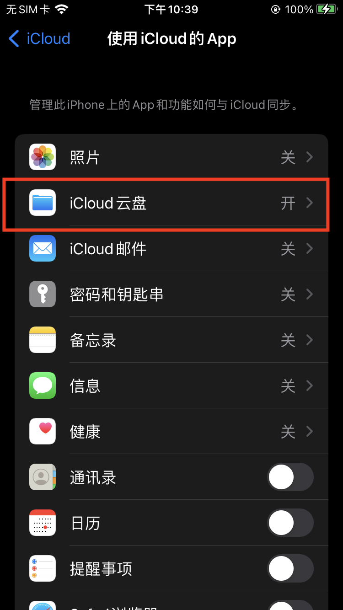

App采用iCloud实现数据同步，当重装App、更换设备时，可实现数据找回。
1.确保每台设备上使用相同的AppID登录。如果你的设备没有使用 Apple ID 登录或关闭了 App 的 iCloud 功能，那么这些设备上的数据将不会保持及时更新。
2.执行以下任一操作
- iOS 16、iPadOS 16 或更高版本：轻点“iCloud”，然后轻点“显示全部”。
- iOS 15、iPadOS 15 或更低版本：轻点“iCloud”。

3.向下滚动，然后开启 App。对于部分 App，你需要先开启 iCloud 云盘，然后才能开启 App。
